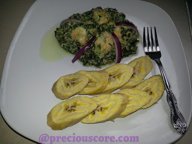

Ndole, a Cameroonian Delicacy
Ingredients
- 2 cups of peeled groundnuts (also called called peanuts)
- cups of bitterleaf and/or spinach
- Half teaspoon of baking SODA (for blanching vegetables)
- ¼ cup crayfish- coarsely blended
- 2 pounds of boiled beef/beef feet/smoked fish/stock fish/shrimps
- 5 cloves of garlic
- 1 inch of ginger
- 1 maggi crevette (crayfish seasoning cube)
- 2 regular seasoning cubes (maggi or knorr)
- 1 large onion
- 1 cup of vegetable oil
- 1 habanero pepper (totally optional)
- Here is how to make lovely Ndole
Preparations
-
Put your groundnuts in a pot and let it boil.
-
If using shrimps, season them with a little salt (and white pepper if you wish) and set aside to marinate.
-
Chop up your spinach.
-
Start the boiling and blanching process. Put water in a pot to boil and put in salt and baking soda.
-
Use the tip of your finger to check the bitterleaf for softness.
-
If soft enough, add in the spinach and turn off the stove. Let it sit for TWO minutes.
-
Pour vegetable onto a strainer and immediately run cold water on it.
-
Peel garlic and ginger and chop half of your onions then put in a blender plus your boiled groundnuts and pepper (if using).
-
Boil your meat and fish then add blended groundnuts and bring to boil. Then add crayfish.
-
Add the veggies
-
Give that a good mix, let it simmer for about 5 minutes and turn off the heat.
-
Add seasoning
-
Chop upp the onion. Put oil to heat up in a skillet and saute the onions
- Add the shrimps
- Serve with boiled plantains, or anything of your choice!